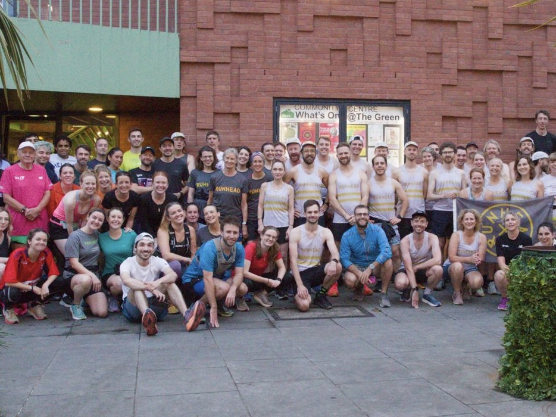

Tuesday nights
A social evening run around South London. We meet at The Old Nun’s Head and return there for an optional drink and a chat.
19:25Meet
19:30Start
~45 minRun
Pace groups from 8 to 11 minutes per mile (about 5:00 to 7:00 min/km).
Runhead is an SE15-based running club. Our goal is to be the friendliest running club in London. We run at different paces. We take part in races and ultras, and meet for relaxed runs, trails, and pub crawls.

RUNHEAD AC. NUNHEAD, SE1501 THE RUNS
A social evening run around South London. We meet at The Old Nun’s Head and return there for an optional drink and a chat.
Pace groups from 8 to 11 minutes per mile (about 5:00 to 7:00 min/km).
We regularly meet for Sunday long runs and parkrun meetups. Check the latest plans for times and locations.
Take the club beyond the usual streets. We share each trail run’s details when it is planned.
Plans can vary. Check our WhatsApp community for the latest updates.
02 FIRST TIME?
You can meet us outside The Old Nun’s Head before the run.
We start running at 19:30 on Tuesdays.
Groups run between 8 and 11 minutes per mile. A run leader guides each group.
We wait at traffic lights and hilltops. We do not leave runners behind.
People often return to the pub for a drink and food. You can also just head home, no pressure either way.
THE PRACTICAL BITS
No. Club membership and all Runhead runs are free. Join the club to receive the official newsletter. Paid England Athletics registration is optional.
Our pace groups range from 8 to 11 minutes per mile, about 5:00 to 7:00 minutes per kilometre. Ask a run leader which group fits you.
No. The groups wait at traffic lights and hilltops so runners can catch their breath. Each group has a run leader.
You can leave a bag or coat at The Old Nun’s Head at your own risk. Keep valuables with you.
Our runs usually continue in rain. The club does not run when there are weather warnings. Check the WhatsApp community for updates.
Dates and routes vary. The club shares plans in its WhatsApp community.
Still have questions? Email the club before you come.
03 THE CLUB
Runhead is based in SE15, South East London. We run together, share routes, and spend time together after the run. We also raise money for Westminster House Youth Club when we can.
SEE YOU OUT THERE
Join the club for free to receive our official newsletter. Join WhatsApp for run plans and conversations.